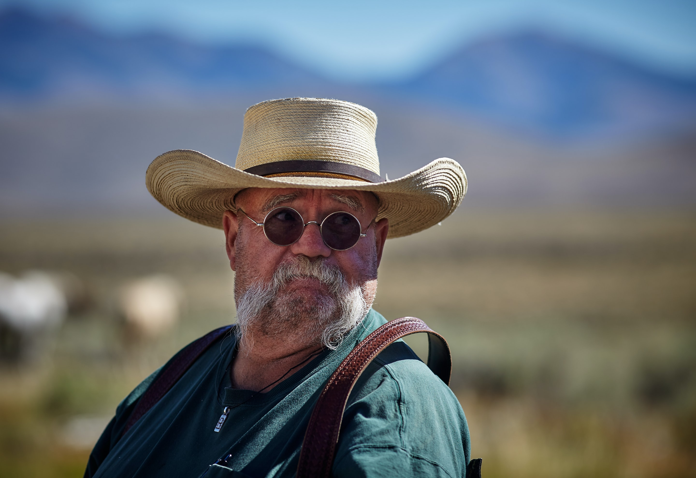

Our Target Audience
Our target audience will be nearly all people. We aim to cater to anyone who needs to accuratly and quickly
Know both what the weather currently is and what the weather will be like in the comming hours, days, and weeks.
They will be normal people like you and me who do not want to spend 20 minutes reading dense meatorolgy reports but instead
just want to be sure that they do not need an umbrella tommorow.
Personas
Jeb
- Occupation: Farmer
- Goals and motivation for using the site: Jeb is a farmer who needs accurate weather predictions.
He also needs an interface that is very easy to navigate as he is not very technological. - Technology: Jeb checks the weather every morning from his desktop at home but will often check
Throughout the day from his phone.
Emma
- Occupation:Marketing coordinator
- Goals and motivation for using the site:Emma is very busy and has the difficult task of managing her time
between her 3 children and promising career. Because of this she needs to be able to quickly and effeciently look up the
weather in her area so she knows if she and her kids need to be prepared for inclement weather. - Technology: Emma spends the majority of her web browsing on her phone.
- When can I start planting
- Do I need to bring my umbrella to this meeting
- Should I pack some sunscreen today
- Is it going to frost overnight
- Is it hot enough to cook an egg on the sidwalk